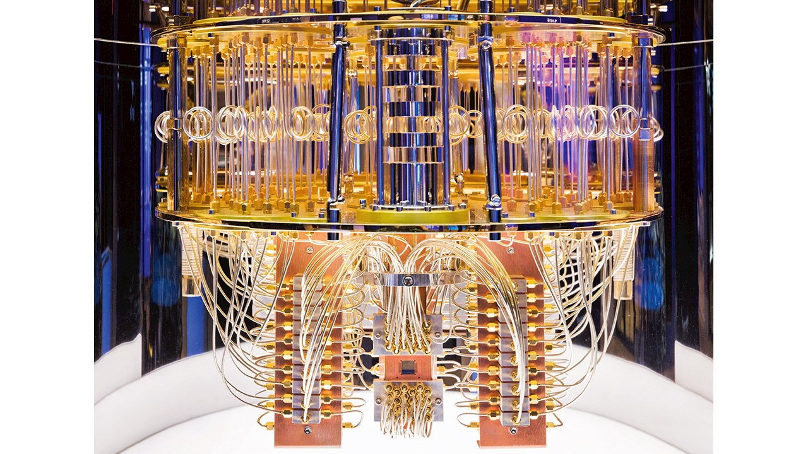
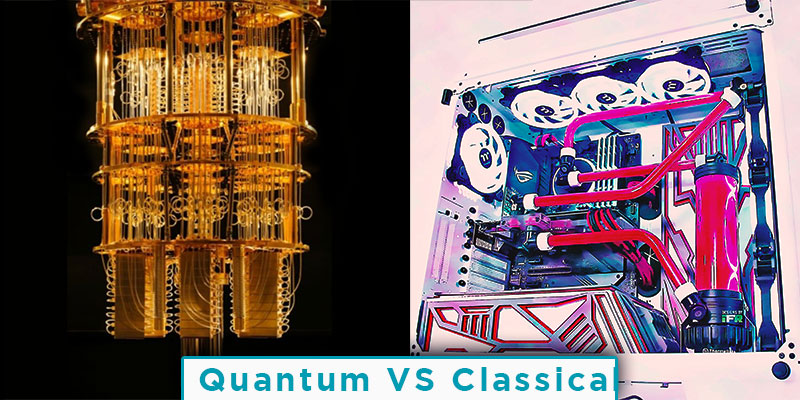
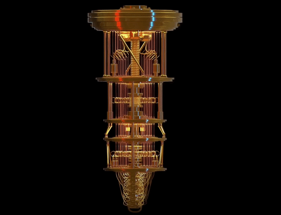

what is Quantum Computing?
Quantum computing is an area of computing focused on developing computer technology based on the principles of quantum theory (which explains the behavior of energy and material on the atomic and subatomic levels). Computers used today can only encode information in bits that take the value of 1 or 0—restricting their ability.
Quantum computing, on the other hand, uses quantum bits or qubits. It harnesses the unique ability of subatomic particles that allows them to exist in more than one state (i.e., a 1 and a 0 at the same time).
KEY TAKEAWAYS:
1.Quantum computing is the study of how to use phenomena in quantum physics to create new ways of computing. 2.Quantum computing is made up of qubits. 3.Unlike a normal computer bit, which can be 0 or 1, a qubit can be either of those, or a superposition of both 0 and 1. 4.The power of quantum computers grows exponentially with more qubits. 5.This is unlike classical computers, where adding more transistors only adds power linearly.
Understanding Quantum Computing
Superposition and entanglement are two features of quantum physics on which these supercomputers are based. This empowers quantum computers to handle operations at speeds exponentially higher than conventional computers and at much lesser energy consumption. The field of quantum computing started in the 1980s. It was then discovered that certain computational problems could be tackled more efficiently with quantum algorithms than with their classical counterparts.

Quantum computing could contribute greatly in the fields of finance, military affairs and intelligence, drug design and discovery, aerospace designing, utilities (nuclear fusion), polymer design, machine learning and artificial intelligence (AI) and Big Data search, and digital manufacturing. Its potential and projected market size have engaged some of the most prominent technology companies to work in the field of quantum computing, including IBM, Microsoft, Google, D-Waves Systems, Alibaba, Nokia, Intel, Airbus, HP, Toshiba, Mitsubishi, SK Telecom, NEC, Raytheon, Lockheed Martin, Rigetti, Biogen, Volkswagen, and Amgen.
Quantum Computer vs. Classical Computer
Quantum computers process information differently. Classical computers use transistors, which are either 1 or 0. Quantum computers use qubits, which can be 1 or 0 at the same time. The number of qubits linked together increases the quantum computing power exponentially. Meanwhile, linking together more transistors only increases power linearly.

Classical computers are best for everyday tasks that need to be completed by a computer. Meanwhile, quantum computers are great for running simulations and data analyses, such as for chemical or drug trials. These computers must be kept ultra-cold, however. They are also much more expensive and difficult to build.
Classical computing advances include adding memory to speed up computers. Meanwhile, quantum computers help solve more complicated problems. While quantum computers might not run Microsoft Word better or faster, they can run complex problems faster. For example, Google’s quantum computer that’s in development could help with many processes, such as speed up machine-learning training or help create more energy-efficient batteries.
Quantum computing has a number of other applications, including securely sharing information. Other methods include fighting cancer and various health concerns, such as cancer and developing new drugs. As well, quantum computers can help improve radars and their ability to detect such things as missiles and aircraft. Other areas include the environment and using quantum computing to keep the water clean with chemical sensors.
Real-World Example of a Quantum Computer
Google (GOOG) is spending billions of dollars on its plan to build its quantum computer by 2029. The company has opened a campus in California, called Google AI, to help it meet its goal. Google has been investing in this technology for years. As well, so have other companies, such as Honeywell International (HON) and International Business Machine (IBM). IBM expects to hit major quantum computing milestones in the coming years.
While some companies have built personal (although expensive) quantum computers, there is still nothing available on the commercial side. And there’s interest in quantum computing and its technology, with JPMorgan Chase and Visa looking into the technology. Once developed, Google could launch a quantum computing service via the cloud.

Companies can also gain access to quantum technology without having to build a quantum computer. IBM plans to have a 1,000-quibit quantum computer in place by 2023. For now, IBM allows access to its machines if they’re part of its Quantum Network. Those that are part of the network include research organizations, universities, and laboratories.6 Microsoft also offers companies access to quantum technology via the Azure Quantum platform. This is unlike Google, which doesn’t sell access to its quantum computers.
Quantum Computer FAQs:
What Company Was Known as "Quantum Computer Services, Inc?”
America Online (AOL) was formerly known as Quantum Computer Services Inc. AOL first started as Quantum Computer Services in 1985. The company was started by employees from the Control Video Corporation (CVC).
How Do You Build a Quantum Computer?
Building a quantum computer takes a long time and is expensive. Google has been working on building a quantum computer for years and has spent billions of dollars. Google expects to have its quantum computer ready by 2029, although IBM hopes to have a 1,000-quibit quantum computer in place by 2023.
How Much Does a Quantum Computer Cost?
To build, quantum computers still cost billions. However, China-based Shenzhen SpinQ Technology plans to sell a $5,000 desktop quantum computer to consumers for schools and colleges. Last year, it started selling a quantum computer for $50,000.
How Fast Is a Quantum Computer?
A quantum computer is many times faster than a classical computer and even a supercomputer. Google’s quantum computer, Sycamore, is said to have performed a calculation in 200 seconds that one of the world’s fastest computers, IBM's Summit, would take 10,000 years to solve.9 IBM disputes this claim, saying it would take 2.5 days-still more than 1,000x slower than Google's quantum machine.
The Bottom Line
Quantum computing is different from classical computing in how it operates and what it's used for. Quantum computing uses qubits, which can be 1 or 0 at the same time, while classical computers use transistors, which can only be 1 or 0. As a result, quantum computing is much more powerful and can be used for big data analysis or simulations. However, there has not been a commercially developed quantum computer yet.